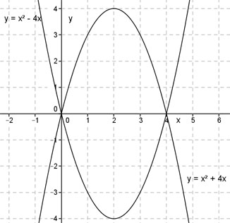

Aufgabe 61 Eine Parabel hat die Funktionsgleichung y = x2 + 6x. Bestimmen Sie ihre Scheitelpunktkoordinaten? Bestimmen Sie ihre Nullstellen. Die Parabel wird um 5 Einheiten nach oben und um 5 nach rechts verschoben. Wie lautet die Gleichung der verschobenen Parabel? Die verschobene Parabel wird an der x-Achse gespiegelt. Wie lautet die Gleichung der gespiegelten Parabel? Ermittlung der Scheitelpunktform: Quadratische Ergänzung: y = x2 + 6x + 9 – 9 mit x2 + 6x + 9 = (x + 3)² y = (x + 3)2 - 9 Abgelesen : S(-3|-9) Nullstellen y = 0 : x2 + 6x = 0 x * (x + 6) = 0 Dieses Produkt wird dann = 0, wenn entweder x = 0 oder x + 6 = 0 ist: Somit x1 = 0 x2 + 6 = 0 | -6 x2 = -6 N1(0|0) , N2(-6|0) Neue Scheitelpunktkoordinaten: xSneu = xS + 5 = -3 + 5 = 2 ySneu = yS + 5 = -9 + 5 = -4 Neue Scheitelpunktform: y = (x – 2)2 - 4 y = x2 - 4x + 4 – 4 = x2 - 4x Neue Scheitelpunktkoordinaten der gespiegelten Parabel: xSneu = xS = 2 ySneu = -yS = -(-4) = 4 Die Parabel ist nach dem Spiegeln nach unten geöffnet, der Faktor vor dem x2 ist somit = -1. Neue Scheitelpunktform: y = -(x – 2)2 + 4 y = -(x2 - 4x + 4) + 4 = -x2 + 4x – 4 + 4 y = -x2 + 4x 